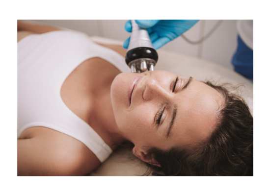
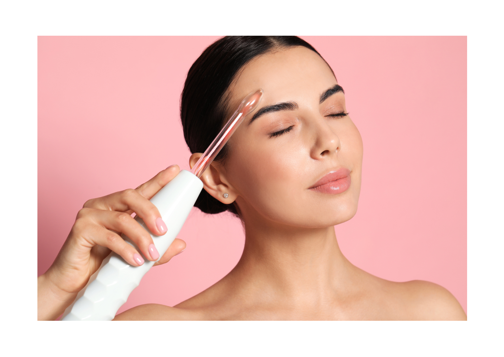

PŘÍSTROJE
Milé dámy,
pečujete o pleť efektivně? Někdy ani drahé krémy neudělají na pleti kýžený efekt, už jen prostě proto, že schopnost krémů vsáknout se do hlubších vrstev kůže je omezená. Mnohem lepší službu Vám udělá krém levnější v kombinaci s důkladným moderním kosmetickým ošetřením, kdy se Vaše pleť probudí a začne regenerovat a pracovat. Jedna z cest jak na to, je využití fyzikálních zákonů. Žádné jehly a drastické zákroky. Moderní technologie, to je oč tu běží.
Dnešní přístroje podporují přirozené procesy v pleti, nijak nemění přirozené prostředí naší pleti, ale jen šikovně využívají teplo, světlo, elektromagnetické pole a vibrace k rychlejší regeneraci pleti a zpomalení stárnutí. Účinněji pleť čistí, dezinfikují, hydratují a masírují. Umí efektivně a bezbolestně vpravit účinná séra do hlubších vrstev pokožky a pomoci ji zevnitř. Zkrátka lehce a fikaně popostrčí pleť k tomu, aby si uchovala dobrou kondici co nejdéle.
Vybírala jsem do salonu certifikované přístroje z prověřených zdrojů a volila jsem takové, aby ošetření bylo vždy příjemné a bezpečné. A poskytlo Vaší pleti viditelný výsledek.
- Chcete pleť důkladně hydratovat?
- Chcete pleť zbavit černých teček a řádně vyčistit?
- Chcete pleť vypnout a stimulovat, aby vypadala odpočatě a mladistvě
- Chcete zabránit tvorbě červených žilek anebo jen sjednotit tón pleti?
- Chcete omladit?
Pak jste tu dobře. Volejte, ráda Vám zodpovím Vaše dotazy a navrhnu optimální řešení.
Radiofrekvence
- hloubkově stimuluje kolagenová vlákna a redukuje mimické vrásky
- pleť prozáří a obnoví svěžest po slunění, odstraňuje ochablost pleti
- viditelně vypíná pleť, kontury tváře a odstraňuje dvojitou bradu, vyhlazuje dekolt
- omlazuje pleť nejen teplem, ale i červeným světlem – fotorejuvenace
- zvyšuje rychlost biochemických reakcí a zlepšuje prokrvení pleti i přísun živin a odplavení zplodin metabolismu, tím změkčuje a odplavuje jizevnatá vaziva
RF je vysokofrekvenční elektromagnetická energie, která se tvoří při průchodu nabitých částic uzavřeným okruhem. Na pleť působí tepelně. Zahřátím hlubších vrstev, kolagenová vlákna nabydou na objemu a na pleti se to jeví jako vypnutí pleti. Navíc modré světlo podpoří účinky ošetření. Ošetření je velmi příjemné.
V salonu používám multipolární výkonnou radiofrekvenci pro ošetření obličeje, krku a dekoltu s výkonem 1MHz. Používám 3 velikosti hlavic, díky čemuž dochází k výraznému prohřátí pleti až do hloubky 5mm a ošetření je velmi přesné i v menších partiích zejména v očním okolí a v oblasti nosoretních rýh.
Po nanesení vodící látky na obličej, jedná se většinou o gel s vitamíny a kyselinou hyaluronovou, pomocí 3 hlavic rychlými krouživými pohyby provádím ošetření. Klientka pociťuje zahřátí pleti, ošetření je příjemné a trvá jen několik minut.
Výsledek je viditelný ihned, proto se hodí jako wow ošetření před plesem či jinou společenskou událostí. Efekt ošetření dosahuje vrcholu cca za 14 dnů po ošetření, pak pomalu mizí. Pokud chceme docílit efektu, který vydrží cca 6 měsíců je třeba provést kůru 4 ošetření vždy po týdnu. Po půlroce je dobré prolongovat efekt dalšími dvěma ošetřeními. Klientka vidí prozářenou, vypnutou pleť, bez začervenání. Reálně nemůžete počítat s tím, že hluboké vrásky zmizí, ale zjemní svou texturu, budete vypadat odpočatě, přirozeně, se zachováním mimiky a pěstěného vzhledu.
Toto ošetření znáte pod pojmy facelift bez skalpelu, rejuvenace, omlazení, lifting obličeje Ano , toto vše umí. Doporučila bych je pleti nad 30 let, kdykoliv budete chtít pleť vypnout, projasnit, vytvořit dojem odpočatosti a svěžesti pro společenskou událost. U pleti nad 45 let bych doporučila občasný lifting a rejuvenaci při běžném ošetření. U pleti 50+ bych začleňovala toto ošetření do klasické péče pravidelně, vždy při běžném ošetření. Své pleti uděláte službu. Je možno využít za příplatek 150 Kč – 200 Kč jako závěrečný lifting k běžnému ošetření anebo jako samostatné intenzivní omlazení s výsledkem, který vydrží cca 6 měsíců.
Zčervenalá, podrážděná kůže, silná kuperóza, onemocnění srdce, kardiostimulátor nebo kovové náhrady v oblasti, které mají být ošetřovány, aktivní infekce bakteriální, virové a plísňové či onkologické onemocnění, během těhotenství a kojení,zánět žil a poruchy srážlivosti krve,neléčený krevní tlak, cukrovka, silné, otevřené akné,autoimunitní onemocnění, výplně a botox méně než měsíc.
40 min. vypnutí jedné zóny + maska, samostatné ošetření 720,- Kč
85 min Omlazení Krk, obličej a dekolt, radiofrekvencestojí 1650,- Kč
120 min Radiofrekvenční ošetření komplet s ultrazvukovu hydratací a vypínací maskou 1950,- Kč
20 min Radiofrekveční ošetření jedné zón jako doplněk k ošetření pleti 250,- Kč
Pokud na toto ošetření přijdete do 8mi dnů podruhé, a celkem 4x můžete pořídit balíčekse slevou
4x 40 min 2300,- Kč
4x 85 min 5900,- Kč
4×120 min 7000,- Kč
Balíček má svou výhodu, pleť snese větší intenzitu ošetření a výsledek je násobně lepší. viz. fotogalerie.
Tak na toto ošetření jsem se velmi těšila. Kdo by nechtěl vyhladit pleť? Jakmile jsem přístroj pořídila, okamžitě jsem započala s ošetřením. Hlubší vrásky na čele či na dekoltu mi zcela nezmizely, prostě hlubší vrásky odstranit neumí. Tento přístroj totiž negumuje, ale stimuluje uvnitř. Co mne ale mile překvapilo, bylo rozjasnění a prozáření pleti, vypnutí drobných nerovností. Ano pleť vypadala krásně, ale linie hlubších vrásek zůstaly. Teda to platilo po prvním ošetření. Po druhém už se hlubší vrásky pomalu vytrácely, no posuďte sami. Mrkněte do fotogalerie.
A bonus navíc? Pleť se rozjasňovala ještě několik dnů po ošetření, protože tento přístroj popožene pleť působením tepla k tomu, aby pracovala a regenerovala. Zkrátka, aby se chovala tak, jako by byla o pár let mladší. Navíc při každém dalším ošetření se účinek stupňuje. Jednak Vaše pleť napodruhé snese vyšší intenzitu tepla, jednak se regenerace zrychluje. Ošetření je navíc velmi příjemné. Zejména v zimních měsících, myslím si, si skutečně užijete, protože teplá sondička na Vaší pleti bude působit jako opravdové rozmazlování. 🙂 Vrásky k věku patří, je v nich zaznamenaný celý náš život. Ale je rozdíl mít hluboké ustarané rýhy anebo jemné linky naznačující naši přirozenost.

Ozonizér s elektropolací a plazmovými toky
- zabraňuje zanícení kůže
- má desinfekční účinky
- posiluje odolnost kůže proti vnějším vlivům, prachu, bakteriím, nečistotám
- zvyšuje mikrocirkulaci a látkovou výměnu v pleti
- zvyšuje elasticitu kůže
- zlepšuje vstřebávání kosmetických preparátů a zapracování aktivních látek
- Je nenahraditelný při regeneračním čištění pleti
- zabraňuje znečištění a ucpávání pórů a předchází vzniku černých teček
- prohřívá tkáň a stimuluje krevní oběh
- je ideální pro aknózní pleť
- je ideální pro pleť s žilkami
- zklidňuje pleť
je založen na vysokonapěťovém vysokofrekvenčním výboji, který je kombinován se střídavým proudem. Vysoká frekvence produkuje vysokovibrační vlnění, které se dostává do pleti skleněným nástavcem. Uvnitř nástavce se nachází 2 plyny neon a argon. Vysokovibrační vlnění se transformuje v teplo a produkuje ozon, který má výrazné sterilizační a dezinfekční účinky. Ošetření je bezbolestné a velmi účinné.
Jemnými tahy skleněnými různými nástavci po pleti se pleť zklidňuje a dezinfikuje. Každý nástavec se využívá pro jinou část obličeje či vlasové části. Provádí se na závěr běžného kosmetického ošetření.
Na pohled je pleť zklidněná, vyčištěná a prozářená. Při pravidelném používání mizí začervenalost pleti, černé tečky a zanícené pupínky.
Toto ošetření známé také jako D‘ arsonvalovy proudy či plazma a ozonizace, bych doporučila každé pleti se sklonem k tvorbě komedonů, akné či smíšené pleti. U pleti do 35 let je to také ideální způsob, jak zvýšit vstřebávání kosmetických přípravků a zlepšit elasticitu pleti například po slunění. U starší pleti je možno využít jako závěrečnou péči k penetraci séra. Penetraci masek a vitamínů během ošetření se u starší pleti doporučuje provádět ultrazvukem. Většinou se poskytuje za příplatek při běžném ošetření pleti.
Onemocnění srdce, kardiostimulátor, onkologická onemocnění, těhotenství, aktivní infekce bakteriální, virové a plísňové; probíhající zánět na ošetřované pleti, oční onemocnění, epilepsie a jiné nervové poruchy,ošetření botoxem nebo výplní
Jako doplněk k běžnému kompletnímu ošetření 15 min.stojí 250 Kč
Jako doplněk k běžnému kompletnímu ošetření v kombinací s radiofrekvencí stojí 30 min. 400,- Kč
Jako ošetření, s čištěním ultrazvukovou špachtlí a zapracováním séra či masky na 35 až 60 min. stojí 700 až 950,- Kč
Jako ošetření aknózní pleti, kde se provádí, odlíčení, úprava , důkladné čištění ultrazvukovou špachtlí, ruční dočistění, ozonová terapie se zapracováním vyrovnávacího séra a maska na závěr stojí 90 min. 1100,- Kč
Toto ošetření vypadá opravdu efektně. V ztemnělé místnosti trubice krásně svítí a to, že se něco děje slyšíte pouhým uchem. Za chvíli i cítíte. Ozón jde cítit. Zvuk může být pro někoho místy nepříjemný, ale většinou ho vnímáte jen jako mírné bzučení. K desinfekci pleti skutečně dochází a to do hloubky. Za pouhé 4 dny jsem zaléčila rozjeté akné u syna. Mně osobně se zúžily póry a pleť vypadala barevně sjednoceně a klidně. Černé tečky se stávají méně viditelné, anebo možná i skutečně mizí… I majitelky rozšířených žilek budou mile překvapeny. Já žilky nemám, ale má první klientka ano, a po ošetření vypadala „bíle“. 🙂

Ultrazvuk
- Jemnou masáží zvyšuje průchodnost mezibuněčných prostor a tím maximalizuje průchodnost účinných látek do hlubších vrstev kůže
- Snižuje otoky
- Zrychluje hojení akné
- Redukuje drobné vrásky
- Umožňuje hlubokou hydrataci
- Snižuje nadprodukci melatoninu, čímž omezuje tvorbu pigmentových skvrn
- Zpevňuje cévní stěny a omezuje tvorbu rozšířených žilek
- Zlepšuje krevní a lymfatický oběh a startuje metabolismus a regeneraci buněk
- Uvolňuje obličejové svaly a snižuje celkové napětí obličeje, tím vypadá obličej mladší
Opakovaný tah a tlak ultrazvukových vln různých délek působí jako jemná masáž rozpínající prostor, ve kterém se buňka nachází. Stimuluje a rozpíná buněčnou membránu a tím zlepšuje krevní a lymfatický oběh, průchodnost mezi buňkami a startuje metabolismus a regeneraci buněk.
Před klasickou masáží je na pleť nanesena vodicí látka, hyaluronový gel, či speciální gelová maska s peptidy, liposomy a vitamíny. Sondou pak kosmetička jezdí po obličeji a dekoltu a výše zmíněné látky vtlačuje do pleti bez použití tlaku, jen pomocí ultrazvukových vln. Ošetření je příjemné, klientka pociťuje lehké teplo. Ultrazvukové ošetření lze aplikovat i pro velmi citlivou pleť.
Pleť je po ošetření silně hydratovaná, prozářená, s vyhlazeným reliéfem a jemnější strukturou. Uvolněné obličejové svaly zvyšují regenerační i relaxační účinek ošetření.
Toto ošetření známé také jako mezoterapie, iontoforéza, hloubková hydratace pleti, patří mezi nejúčinější ošetření v oblasti anti-age. Vřele ho doporučuji všem ženám nad 45 let jako běžnou součást klasického kosmetického ošetření. U mladší pleti je využíváno při problému s akné či rozšířenými žilkami nebo při velmi suché pleti či stresovém období.
Těhotenství, epilepsie a další nervové poruchy, autoimunitní onemocnění, mechanické implantáty v místě aplikace, onkologická onemocnění, nemoci srdce, nemoci ledvin, jater, oběhové soustavy a další závažná nebo infekční onemocnění, nedoporučuje se také po čerstvé aplikaci botoxu a výplní.
Ultrazvukové ošetření expres na 40min stojí 720,- Kč
Neinvazivní mezoterapie bez jehliček na 95 min stojí 1450,- Kč
Mezoterapie bez jehliček komplet s radiofrekvencí jedné zóny 110 min 1550,- Kč
Tento přístroj je můj skutečný mazlíček. Když jsem ho pořizovala, vůbec jsem nedokázala docenit jeho možnosti. Ale získal si mne. Ošetření je příjemné a již po 20ti minutách jste do hloubky hydratovaná. Všechen hylarunový gel či maska a séra se doslova vpijí do pleti. Pleť je opravdu „napumpovaná.“. Dnes, když jdu do divadla, na setkání s přáteli či chci prostě vypadat dobře, využiju toto ošetření, protože jsem prozářená a šťavnatá. A navíc vím, že ultrazvukové vlny uvnitř mé pleti zvýšily mikrocirkulaci, takže pleť prostě „maká“ i poté, co přístroj vypínám a odcházím žít. 🙂
Ultrazvuková špachtle
- Čistí pleť do hloubky
- Provádí hloubkový peeling pleti, odstraňuje odumřelé částečky kůže
- Zrychluje metabolismus pleti a odvádí nečistoty
- Čistí póry
- Umožňuje zažehlit účinné látky hlouběji do pleti
Ultrazvukové vlny působí jako jemná masáž a uvolňují póry tím, že rozpínají buněčnou membránu. Zlepšují krevní a lymfatický oběh a startují rychlejší obnovu pleti. Působí na jiné vlnové délce než Stimulační ultrazvuk, proto je špachtle vhodná především na čištění pleti.
Před ručním čištěním se provádí peeling a čištění špachtlí. Na navlhčenou pokožku se jemným tlakem působí špachtlí, zanícená místa se projíždějí častěji, aby došlo k odemknutí póru a uvolnění mastné zátky. Ošetření je bezbolestné. Následuje ruční dočištění pleti a ozonizérová dezinfekce pleti.
Pleť je po ošetření čistá, prozářená, s vyhlazeným reliéfem a jemnější strukturou.
Toto ošetření je již běžnou součástí klasické kosmetické péče. Je však méně známo, že při problémy s pletí je vhodné po krátký čas chodit i jen na pravidelné čištění ultrazvukovou špachtlí, aby se pleť co nejdříve dostala do rovnováhy a neprodukovala nadbytečný maz. Taková dvouměsíční kůra výrazně zkrátí dobu, po kterou Vás budou trápit pupínky a zanícená pleť a pak už postačí méně častá péče. Špachtlí lze také zažehlit séra do hlubších vrstev – toto platí u mladší pleti. U starší pleti doporučuji penetraci látek provádět účinějším Stimlačním ultrazvukem.
Onemocnění štítné žlázy, těhotenství, onkologické onemocnění a onemocnění srdce, naslouchadlo, aktivní infekce bakteriální, virové a plísňové,oční onemocnění, epilepsie,probíhající zánět na ošetřované pleti, onemocnění srdce, kardiostimulátor, silná kuperóza
Čištění UT špachtlí + sérum cca 20 min stojí 480Kč
Čistění pleti i s manuálním dočištěním + sérum 40 min 600,- Kč
Čistění pleti s manuálním dočištením maskou a sérem 700,- Kč
Čištění pleti UT špachtlí + ozonizér + sérum 40 min. 700,-
Čištění pleti UT špachtlí + ozonizér+ maska 50 min 800,- Kč
Čištění pleti UT špachtlí + manuální dočištění, + ozonizér+ maska 60 min 950,- Kč
Kompletní ošetření aknózní pleti 90 min. 1100,- Kč
Ultrazvuková špachtle je “ stará vesta“ a je běžnou součástí kosmetického ošetření. A je to dobře. Když se mi klube pupínek, nebo mám pleť podrážděnou respirátorem, stačí na 5 – 10 min. přejet po pleti a mazové žlázky uvolní zátku ze zrohovatělých šupinek kůže a moje pleť se do rána sama dá do pořádku. To jak dokáže pomoci aknózní pleti, není třeba ani mluvit. I můj teeneger pochopil, že toto je nejjednodušší a nejrychlejší způsob, jak se zbavit akné nebo ho alespoň účinně zmírnit. Takže ano je to „stará vesta“, ale oblíbená, stejně jako taháte oblíbené tričko pořád dokola, i toto ošetření se neomrzí. 🙂